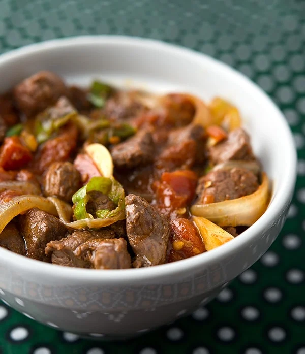

Home
Tibs

Tibs is a popular Ethiopian dish. It is usually served with injera, a sourdough flatbread. Tibs is made from beef, lamb, or goat meat, and is sautéed with vegetables and spices. It is a common dish to be served at special occasions.
Ingredients
- 1 lb beef, lamb, or goat meat
- 1 large onion, chopped
- 2 tomatoes, chopped
- 2 jalapeño peppers, chopped
- 2 cloves of garlic, minced
- 1/4 cup of vegetable oil
- 1/4 cup of butter
- 1/4 cup of berbere spice
- Salt to taste
Instructions
- Heat the vegetable oil in a large skillet over medium heat.
- Add the onions and sauté until they are soft and translucent.
- Add the meat and cook until it is browned on all sides.
- Add the tomatoes, jalapeño peppers, garlic, and berbere spice. Stir well to combine.
- Cover and simmer for 15-20 minutes, or until the meat is cooked through.
- Stir in the butter and season with salt to taste.
- Serve hot with injera or rice.